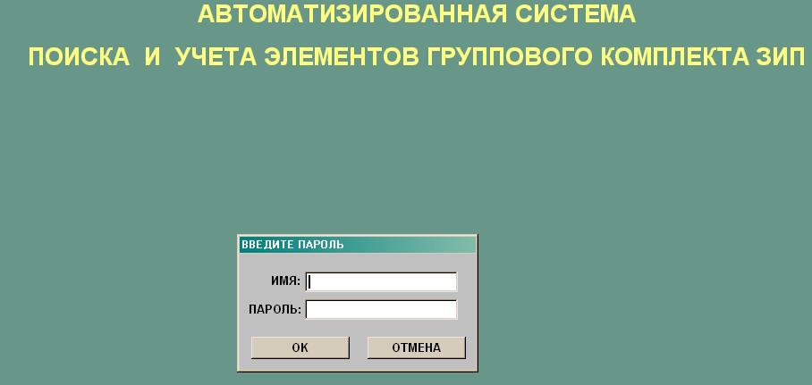
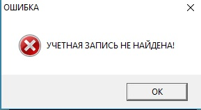
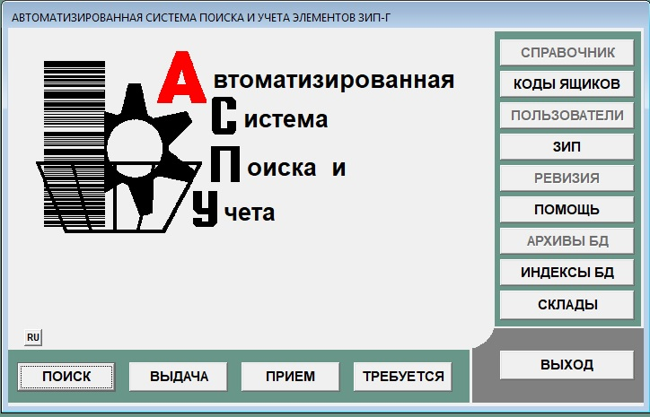
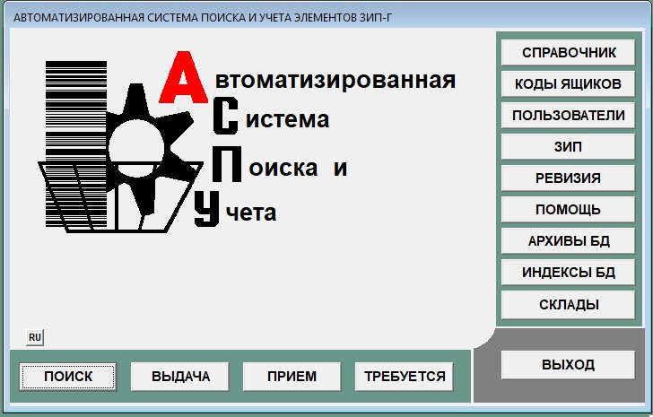

Вход в систему
В конец документа
Запуск АСПУ возможно произвести одним из следующих способов:
- Произвести двойное нажатие левой кнопки "мыши" на ярлыке, расположенном на рабочем столе.
- Вызвать программу нажатием пункта меню ПУСК \ АСПУ \ sga.exe.
- Нажать левой кнопкой мыши на кнопке "Поиск в windows", ввести sga
После произведенных действий произойдет запуск АСПУ. На экране появится форма идентификации пользователя, внешний вид экрана и формы представлены на рисунке 1.

Рисунок 1 - Вход в систему
Пользователю предоставляется две возможности:
- Нажать кнопку "Отмена" для прекращения работы АСПУ. При этом произойдет выход из системы и внешний вид экрана примет свой первоначальный вид
-
В поле "Имя" ввести имя, под которым пользователь зарегистрирован, в поле "Пароль" - пароль пользователя и нажать кнопку "ОК"
В вводе можно использовать - цифры, буквы и символы на клавиатуре.
Если допущена ошибка при воде имени и пароля или введенные данные незарегистрированного в системе пользователя, то появится сообщение, представленное на рисунке 2

Рисунок 2 - Ошибка идентификации пользователя
Необходимо нажать кнопку "ОК". Пользователю повторно будет представлена возможность ввода имени и пароля. При трех неудачных попытках произойдет выход из системы.
При верном вводе данных вход в систему будет продолжен.
Далее будет произведена проверка наличия необходимого количества и срока годности элементов ЗИП-Г. Если данные из базы данных информируют о необходимости пополнения
запасов или их замены, то производится вывод перечня элементов.
После входа в систему на экране отображается головная форма.
Если вошедший в систему пользователь не является администратором, то у него ограниченные права доступа к данным и главная форма принимает вид, представленный на рисунке 3.

Рисунок 3 - Меню пользователя
Если вошедший в систему пользователь является администратором, то главная форма принимает вид, предоставленный на рисунке 4 (Все функции доступны).

Рисунок 4 - Меню администратора
- Кнопка "Поиск". Предназначена для поиск и быстрого перехода к необходимому элементу.
- Кнопка "Выдача". Предназначена для автоматизации операции выдачи элементов ЗИП-Г.
- Кнопка "Прием". Предназначена для автоматизации операции приема элементов ЗИП-Г.
- Кнопка "Требуется". Предназначена для просмотра и вывода на печать списка элементов, запасы которых необходимо пополнить или заменить.
- Кнопка "Справочник". Корректировка базы данных. Предназначена для изменения и добавления элементов ЗИП-Г.
- Кнопка "Коды ящиков". Ведение справочника штрих-кодов ящиков(панелей) с просмотром списка содержимого ящика(панели).
- Кнопка "Пользователи". Администрирование системы. Предназначена для регистрации пользователей системы.
- Кнопка "ЗИП". Просмотр базы данных. Предназначена для просмотра подробной информации об элементах ЗИП-Г.
- Кнопка "Ревизия". Проведение ревизии. Предназначена для проверки наличия всех необходимых элементов и, при необходимости, изменения их фактического колличества.
- Кнопка "Помощь" - Вызов справки системы.
- Кнопка "Архивы баз данных". Ведение архивов баз данных. Для хранения и аварийного восстановления информации.
- Кнопка "Индексы баз данных". Индексирование текущего состояния баз данных. Для аварийного восстановления индексов к текущим базам данных.
- Кнопка "Склады". Экспортирование и импортирование информации по складу. Данная функция необходима для хранения информации по складу и передачи информации от одного локального компьютера к другому.
- Кнопка "Выход" - Выход из системы.
- Кнопки "RU/FR" - Вызывается подменю где можно переключить язык системы.